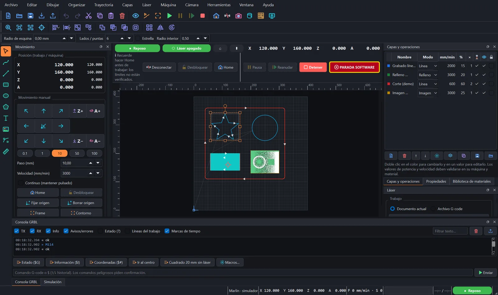
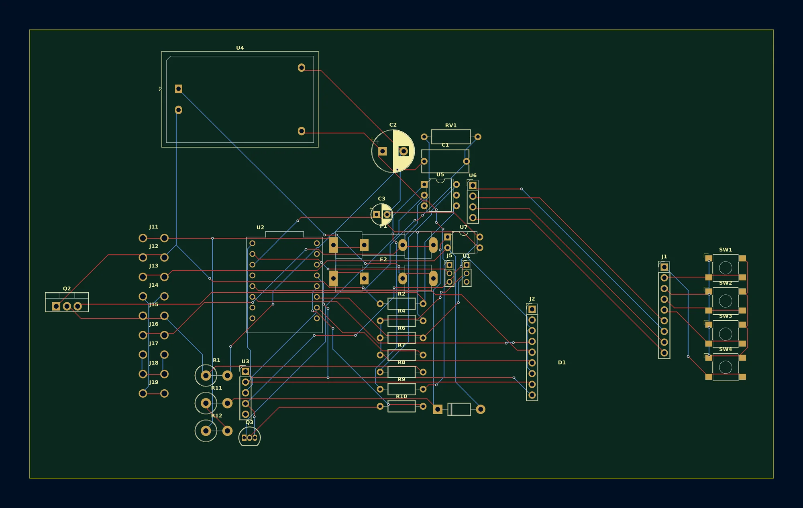
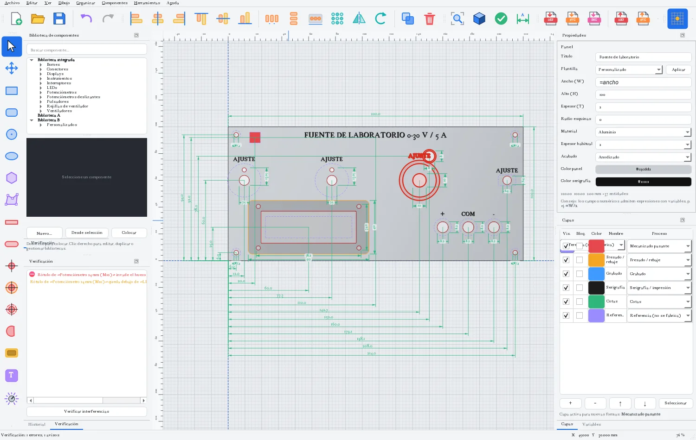
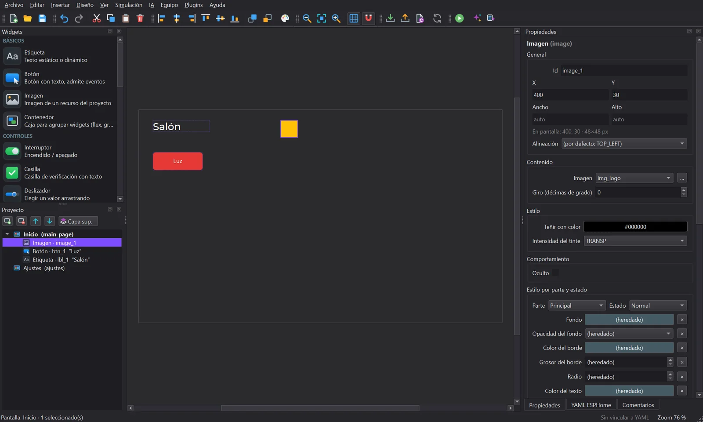
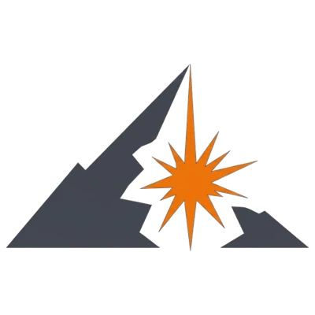
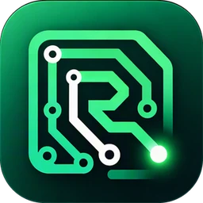
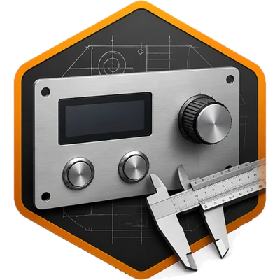
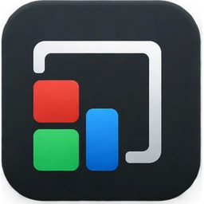

Herramientas libres
para quien construye
electrónica
Open tools
for people who
build electronics
Cuatro aplicaciones de escritorio para grabar y cortar con láser, rutear placas de KiCad, diseñar paneles frontales y crear pantallas LVGL para ESPHome. Hechas en Python + Qt, para Windows, macOS y Linux.
Four desktop applications to engrave and cut with a laser, route KiCad boards, design front panels and build LVGL screens for ESPHome. Made with Python + Qt for Windows, macOS and Linux.
Mueve el ratón: las pistas se rutean solas hacia el cursor.Move the mouse: the traces route themselves towards the cursor.
ProyectosProjects

OpenLaser Studio
Diseña, simula y envía trabajos de grabado y corte a máquinas GRBL, grblHAL y FluidNC.
Design, simulate and send engraving and cutting jobs to GRBL, grblHAL and FluidNC machines.
v0.6.1 publicadav0.6.1 released
OpenRouteAI
Autorouter libre para KiCad: lee el proyecto, rutea todas las pistas respetando las reglas y escribe un .kicad_pcb válido.
Open autorouter for KiCad: reads the project, routes every track within the design rules and writes a valid .kicad_pcb.
v0.6.4 · en desarrollov0.6.4 · in development
Electronic Front Panel Designer
CAD 2D para paneles frontales y traseros: racks 19", Eurorack, cajas Hammond. Exporta a DXF, STL y G-code.
2D CAD for front and rear panels: 19" racks, Eurorack, Hammond boxes. Exports DXF, STL and G-code.
Instaladores Windows y macOSWindows and macOS installers
Open LVGL Studio
Editor visual de pantallas LVGL para ESPHome, con el YAML sincronizado en ambos sentidos.
Visual LVGL screen editor for ESPHome, with the YAML kept in sync both ways.
v0.10 · beta públicav0.10 · public beta
OpenLaser Studio
Del dibujo al quemado en una sola aplicación. Diseña, prepara, simula y ejecuta trabajos de grabado y corte con controladores GRBL 1.1+, grblHAL y FluidNC, y de forma experimental Marlin y Smoothieware.
From drawing to burn in a single application. Design, prepare, simulate and run engraving and cutting jobs on GRBL 1.1+, grblHAL and FluidNC controllers, with experimental Marlin and Smoothieware support.
Pruébalo: simulación de grabadoTry it: engraving simulation
Así se ve la simulación paso a paso de OpenLaser: el cabezal recorre el G-code generado y deja la marca del quemado. Elige una figura, ajusta potencia y velocidad y pulsa Iniciar.
This is how OpenLaser's step-by-step simulation looks: the head follows the generated G-code and leaves the burn mark behind. Pick a shape, set power and speed and press Start.
El láser siempre va apagado en desplazamientos y en el marco, igual que en la aplicación.
The laser is always off during travel moves and framing, just like in the application.
Cómo funcionaHow it works
- Importa o dibujaImport or drawSVG, DXF, PDF/AI e imágenes, o dibuja con capas, nodos, booleanas, texto sobre trayectoria y biblioteca de formas.SVG, DXF, PDF/AI and images, or draw with layers, nodes, booleans, text on path and a shape library.
- Asigna capasAssign layersLínea, Relleno, Relleno + Línea o Imagen, con tramados Floyd–Steinberg, Atkinson, Bayer, semitono… y biblioteca de materiales.Line, Fill, Fill + Line or Image, with Floyd–Steinberg, Atkinson, Bayer and halftone dithering, plus a material library.
- SimulaSimulateG-code con optimización de desplazamientos, puentes, kerf y estimación de tiempo; simulación paso a paso del quemado.G-code with travel optimisation, tabs, kerf and time estimate; step-by-step burn simulation.
- Envía a la máquinaSend to the machineUSB/serie, TCP/Telnet o WebSocket, con detección del firmware, marco, homing, macros y editor de parámetros $$.USB/serial, TCP/Telnet or WebSocket, with firmware detection, framing, homing, macros and a $$ settings editor.
Cámara y Print and CutCamera and Print and Cut
Calibración de lente y del área de trabajo, superposición de la cámara en el lienzo, Print and Cut y Center Finder.
Lens and work-area calibration, camera overlay on the canvas, Print and Cut and Center Finder.
Rotary y 13 asistentes de pruebaRotary and 13 test wizards
Corrección cilíndrica para rotary, biblioteca de materiales y asistentes de enfoque, potencia, intervalo y kerf.
Cylindrical correction for rotary, material library and focus, power, interval and kerf wizards.
Seguridad desde el diseñoSafety by design
Lista de comprobación antes de empezar, parada por software, vigilante del disparo de enfoque, sin desbloqueo automático tras una alarma y registro de eventos.
Pre-start checklist, software stop, focus-fire watchdog, no automatic unlock after an alarm and a safety event log.
Simulador de cada firmwareSimulator for every firmware
Prueba todo sin máquina: el simulador GRBL arranca con run.bat. También envía trabajos a la tarjeta SD de FluidNC/ESP3D.
Try everything without a machine: the GRBL simulator starts with run.bat. It also sends jobs to the FluidNC/ESP3D SD card.
Plugins en PythonPython plugins
Complementos para añadir controladores y herramientas propias.
Add-ons for new controllers and your own tools.

OpenRouteAI
Autorouter de PCB libre para proyectos de KiCad 6 a 10. Lee el proyecto, rutea todas las pistas respetando las reglas de diseño y escribe un .kicad_pcb que se abre directamente en KiCad. Placas de 2 y 4 capas, SMD y THT, validadas con DRC propio y con el de KiCad.
Open PCB autorouter for KiCad 6 to 10 projects. It reads the project, routes every track within the design rules and writes a .kicad_pcb that opens straight in KiCad. 2- and 4-layer boards, SMD and THT, checked with its own DRC and KiCad's.
Pruébalo: rutea una placaTry it: route a board
Una versión simplificada en el navegador (A* en rejilla, dos capas con vías). Arrastra un componente para moverlo y pulsa Rutear.
A simplified in-browser version (grid A*, two layers with vias). Drag a component to move it and press Route.
- Redes ruteadasNets routed
- 0 / 0
- Longitud totalTotal length
- 0 mm
- VíasVias
- 0
Cómo funcionaHow it works
- Prepara en KiCadPrepare in KiCadActualiza la PCB desde el esquema (F8), coloca las huellas o deja que OpenRouteAI las coloque, y dibuja el contorno en Edge.Cuts.Update the PCB from the schematic (F8), place the footprints or let OpenRouteAI place them, and draw the outline on Edge.Cuts.
- Abre y elige estrategiaOpen and pick a strategyAbre el .kicad_pro, ajusta anchos de pista, vías y clases de red, y elige el algoritmo: A*, Lee, Hadlock o negociado.Open the .kicad_pro, set track widths, vias and net classes, and choose the algorithm: A*, Lee, Hadlock or negotiated.
- Enruta todoRoute allNúcleo de búsqueda en C y GPU NVIDIA opcional para placas grandes; las pistas se depuran a rectas y 45°.C search core and optional NVIDIA GPU for large boards; tracks are cleaned up to straight and 45° segments.
- Revisa y guardaReview and saveVista 2D/3D, mapa de congestión y DRC. Se guarda nombre_enrutado.kicad_pcb, listo para abrir en KiCad.2D/3D view, congestion map and DRC. It saves name_enrutado.kicad_pcb, ready to open in KiCad.

Electronic Front Panel Designer
CAD 2D para los paneles frontales y traseros de tus equipos: fuentes de laboratorio, amplificadores, instrumentos, módulos Eurorack, cajas Hammond y paneles rack de 19".
2D CAD for the front and rear panels of your gear: bench power supplies, amplifiers, instruments, Eurorack modules, Hammond boxes and 19" rack panels.
Pruébalo: generador de escalasTry it: scale generator
Una versión reducida del generador de escalas para potenciómetros (Mayús+E). Cambia el recorrido, las marcas y la numeración; gira el mando arrastrándolo.
A cut-down version of the potentiometer scale generator (Shift+E). Change the sweep, ticks and numbering; drag the knob to turn it.
Cómo funcionaHow it works
- Elige el panelPick the panelPlantillas rack 1U–4U, Eurorack 3U, Hammond 1590B/BB/XX; material, espesor, radio de esquinas y colores.Rack 1U–4U, Eurorack 3U and Hammond 1590B/BB/XX templates; material, thickness, corner radius and colours.
- Coloca componentesPlace componentsMás de 60 con su mecanizado y cuerpo trasero: potenciómetros, encoders, LCD, OLED, BNC, XLR, IEC, USB, ventiladores y 80 rejillas.More than 60 with their cut-outs and rear bodies: pots, encoders, LCD, OLED, BNC, XLR, IEC, USB, fans and 80 grilles.
- Rotula y acotaLabel and dimensionTextos, logotipos SVG/DXF, escalas de potenciómetro, cotas vinculadas y expresiones como =W/2 que se recalculan solas.Text, SVG/DXF logos, pot scales, linked dimensions and expressions like =W/2 that update themselves.
- VerificaCheckF7 avisa de huecos fuera del panel, puentes mínimos, solapes, choques de cuerpos traseros y textos tapados por un mando.F7 warns about holes off the panel, minimum webs, overlaps, rear-body clashes and text hidden under a knob.
- ExportaExportDXF R12 por capas, SVG, PDF 1:1 como plantilla de taladrado, PNG, STL con rebajes, G-code y HPGL.Layered DXF R12, SVG, 1:1 PDF drilling template, PNG, STL with pockets, G-code and HPGL.

Open LVGL Studio
Diseñador visual de interfaces LVGL para ESPHome: dibujas la pantalla y obtienes el YAML listo para tu dispositivo. Al importar un YAML queda vinculado, y los cambios van y vienen entre el editor y el fichero.
Visual LVGL interface designer for ESPHome: draw the screen and get YAML ready for your device. An imported YAML stays linked, so changes flow both ways between the editor and the file.
Pruébalo: lienzo y YAML sincronizadosTry it: canvas and YAML in sync
Arrastra los widgets o cambia sus x, y y text en el YAML y verás cómo se sincronizan en los dos sentidos. Doble clic en un interruptor para cambiarlo.
Drag the widgets or change their x, y and text in the YAML and watch both sides stay in sync. Double-click a switch to toggle it.
Cómo funcionaHow it works
- Importa tu YAMLImport your YAMLCtrl+I abre una configuración de ESPHome: capas, tarjetas con flex y grid, pestañas, estilos y lambdas.Ctrl+I opens an ESPHome config: layers, flex and grid cards, tabs, styles and lambdas.
- DiseñaDesignArrastra widgets al lienzo a la resolución real, con propiedades, estilos, componentes reutilizables y plugins.Drag widgets onto the canvas at real resolution, with properties, styles, reusable components and plugins.
- SimulaSimulateF5 abre el simulador con gestos táctiles como en LVGL y varios dispositivos a la vez, cada uno con su resolución y giro.F5 opens the simulator with LVGL-style touch gestures and several devices at once, each with its own resolution and rotation.
- Exporta a ESPHomeExport to ESPHomeCtrl+E escribe ui_lvgl.yaml y las imágenes; lo incluyes en tu dispositivo con packages.Ctrl+E writes ui_lvgl.yaml and the images; include it in your device with packages.
Community
Editor visual, importación, sincronización con el YAML, simulador y plugins.
Visual editor, import, YAML sync, simulator and plugins.
Pro
Extensión para VS Code e importación avanzada de YAML.
VS Code extension and advanced YAML import.
Enterprise
Versiones visuales, colaboración, catálogo de componentes y herramientas de IA.
Visual versions, collaboration, component catalogue and AI tools.
Beta pública 0.10 con licencia doble (abierta y comercial). Python + PySide6.
Public beta 0.10 with dual licensing (open and commercial). Python + PySide6.
Hecho en un taller, para otros talleresMade in a workshop, for other workshops
Estas aplicaciones nacen de necesidades reales: grabar con un láser GRBL propio, sacar placas de KiCad sin pelearse con el ruteado, mecanizar paneles que encajen a la primera y montar una pantalla domótica de 7" para Home Assistant. Todo el código es abierto, se prueba con autopruebas automáticas en cada versión y está traducido a varios idiomas.
These applications come from real needs: engraving with a home-built GRBL laser, getting KiCad boards out without fighting the routing, machining panels that fit first time and building a 7" home automation screen for Home Assistant. All the code is open, tested with automatic self-tests on every release and translated into several languages.
- 4
- aplicaciones de escritoriodesktop applications
- 4
- idiomas: español, inglés, francés y alemánlanguages: Spanish, English, French and German
- 3
- sistemas: Windows, macOS y Linuxsystems: Windows, macOS and Linux